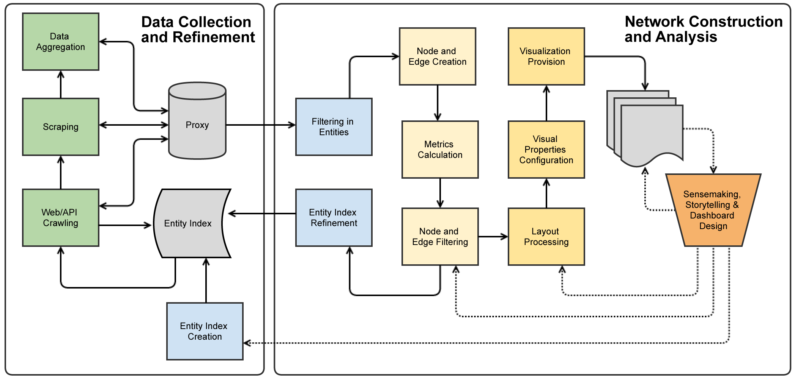

Introduction to Data-Driven Network Analytics
SPEED Workshop, Copenhagen 2015
Based on a SPEED network analysis workshop held at Tampere in February 2015.
Principle

Image Source: Anatomy of a social network (Gray 2012)
History: Six Handshakes
Milgramin (1967) experiments gave firm evidence on the existence of a small-world: "the diameter of the world" is roughly six handshakes.

Key result: Scale Free networks
Barabási and Bonabeau (2003) presented the principle of scale-free networks and the reason for their existence: preferential attachment process

Image Source: Anatomy of a social network (Gray 2012)
Example: Finnish Innovation Ecosystem
Finnish Innovation Ecosystem (Still et al., 2013)
Part 1: Collecting data
The objective is to put together a sociomatrix

Image source: Hoffman (2001): Introduction to Sociometry
Sociomatrix is the matrix representation of a sociogram. (Moreno (1934) may have used the latter in a slightly different meaning.)
Sociomatrix enumerates the individual connections between actors. Matrix representation allows for different kinds of computations, cf. Miilumäki (2011).
In practice connections are simply enumerated one by one
| Source | Target | Type | Id | Label | Weight |
| 26 | 11 | Directed | 55 | 31 | |
| 55 | 26 | Directed | 131 | 21 | |
| 55 | 11 | Directed | 132 | 19 | |
| 27 | 11 | Directed | 58 | 17 | |
| 62 | 58 | Directed | 161 | 17 | |
| 59 | 58 | Directed | 147 | 15 | |
| 25 | 24 | Directed | 51 | 13 | |
| 62 | 59 | Directed | 162 | 13 | |
| 25 | 11 | Directed | 53 | 12 | |
| 55 | 49 | Directed | 128 | 12 | |
| 64 | 62 | Directed | 177 | 12 |
. . .
Network representation of the previous: Les Miserables

Another example: government networks
Olli Parviaisen introduces a straigtforward way to conduct network analysis (if you first learn Finnish ;).
Datan lähteille: Twitter
Aivan. Ja #communitymanager-tarpeet tietynlaisia. #cmadfikisa @jattipaa @jjussila @MeltwaterFIN @MBrainGroup @jjanhone @EzyInsights
— Jukka Huhtamäki (@jnkka) 4. helmikuuta 2014In practice
Interpreting your Facebook friendship network is an educational exercise.
Kari A. Hintikka ohjeistaa, Jukka shows an example should time allow.
Part 2: From data to network
Choises on network structure
- Which entities nodes represent?
- On what basis are nodes connected to each other?
- One, two or multimode network?
- Directed or undirected?
- Dichotomous vai weighed connections?
- Static or dynamic (temporal)?
Examples help here.
From tweets to a network
Let's decompose an example tweet into network data:
Aivan. Ja #communitymanager-tarpeet tietynlaisia. #cmadfikisa @jattipaa @jjussila @MeltwaterFIN @MBrainGroup @jjanhone @EzyInsights
— Jukka Huhtamäki (@jnkka) 4. helmikuuta 2014
- Nodes? Connections?
- One, two, multimode?
- Directed or undirected?
- Dichotomous or weighed?
- Which criteria one should apply to make the decisions?
Problem: identifying the nodes
Twitter provides natural identifiers for nodes.
E.g. using bibliographical data is more problematic
One approach to finding unique names for nodes: OpenRefine
Part 3: Network layout
Force-driven layout
Layout refers to the act of placing the nodes on canvas
Force-driven layot is a straighforward option:
- Nodes repel each other
- Connections act as springs pulling the nodes back together
- The center of a gravitational field is placed in the middle of the canvas
- THe process is run and configured until the visualizer is happy with the result
Network metrics
- Degree: number of connections
- Outdegree: number of connections away from a node
- Indegree: number of connections toward a node
- Betweenness centrality: shortest paths through a node
- Authority
- Clustering coefficient, closure, ...
The Ostinato Model

Huhtamäki, J., Russell, M. G., Rubens, N., & Still, K. (2015). Ostinato: The exploration-automation cycle of user-centric, process-automated data-driven visual network analytics. In E. Bertino, S. Matei, & M. G. Russell (Eds.), Roles, Trust, and Reputation in Social Media Knowledge Markets. Springer. See: Kredible.net Call for Chapter Proposals.
Esimerkki: verkoston solmujen arvovalta (prestige)
Toteutus Gephillä:
- Statistics > Avg. (Weighted) Indegree > Close
- Ranking > Size/Weight (Timantti-symboli) > Authority
- Min size: 3, Max size: 40
- Valitse Apply
Eroja? Tulkinta?
Esimerkki: verkoston solmujen auktoriteetti
Toteutus Gephillä:
- Statistics > HITS > OK > Close
- Ranking > (Timantti-symboli) Size/Weight > Weighted Indegree
- Min size: 3, Max size: 40
- Valitse Apply
Mitä solmun koko nyt ilmaisee?
Esimerkki: Verkoston rakenteen analyysi
Verkoston rakenteen analyysiä Gephillä:
- Statistics > Modularity > Run > OK
- Partition > (Päivitä-symboli) > alasvetovalikosta: Modularity Class
- Miten tulkitset?
Lisätietoa: Näin teen vuorovaikutteisen verkostokartan
- Gephi > Export... > GEXF-muodossa
- Sijoita Web-hakemistoon (siis Web-palvelimma sijaitsevaan hakemistoon)
- Lataa ja pura gexf-js samaan hakemistoon
- Muokkaa config.js: korvaa miserables.gexf luomallasi tiedostolla
- Avaa sivu selaimessa - osa selaimista ei salli avaamista paikalliselta koneelta (avaathan tämän, Jukka!)
Lisätietoa: raapijat ja ryömijät
Raapijat (scraper) ja ryömijät (crawler) ovat tiedon keräämistä automatisoivia tietokoneohjelmia:
- Aloita tästä: Scraping for Journalists
Nämä tässä vaiheessa tiedoksi - ATK tekee edelleen tuloaan:
- Scraperwiki
- Mechanize
- Scrapy
- Ghost in the Web : Scraping with Phantom and Casper (Alexandre Rimthong)
Lisätietoa: Ruudunraavinnan alkeet
Google Drive > Laskentataulukko
=ImportHtml("http://fi.wikipedia.org/wiki/Ektro_Records", "list", 0)
=ImportHtml("http://fi.wikipedia.org/wiki/Circle","table",2)
Suositeltavaa lukemista: Scraping for Journalists (Bradshaw, 2013)
Esimerkki: Edistyneempi ruudunraavinta
Suomi24 ja keskusteludatan ohjelmallinen kerääminen (koodi- ja periaate-esimerkki) - ajan salliessa ja mikäli kiinnostusta on.
Lisätietoa: Twiittien kerääminen Google Drivellä
Martin Hawksey on toteuttanut GDrive-laskentataulukoihin perustuvan Twitter-keräimen.
Keräin automatisoi datankeräyksen ja prosessi pysyy käynnissä pitkäänkin.
Verkostoanalyysin toteuttaminen kerätyn datan pohjalta voi tosin olla haastavaa ilman ohjelmointia.
Keräimen käynnistäminen vaatii pientä teknistä tuunausta, mutta onnistuu kyllä Hawkseyn ohjeiden tuella.